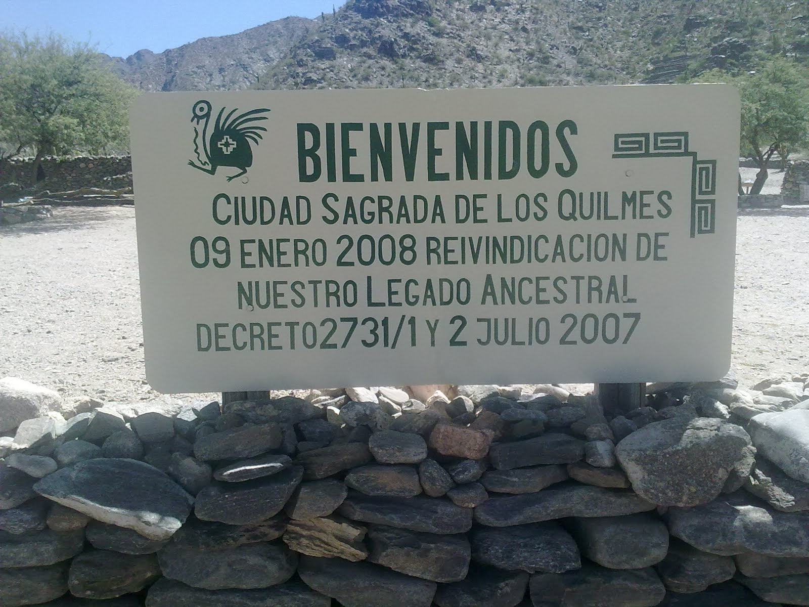
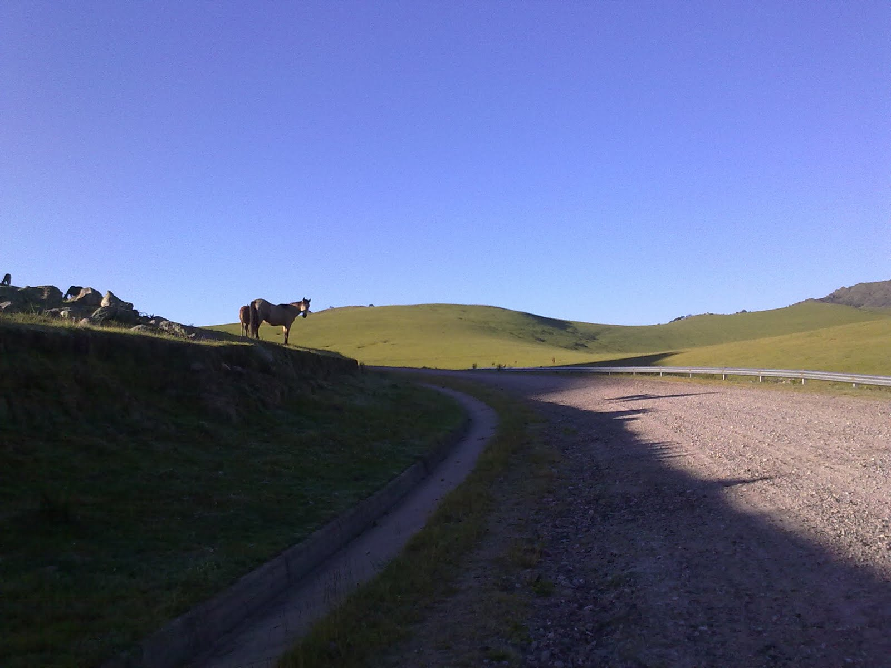
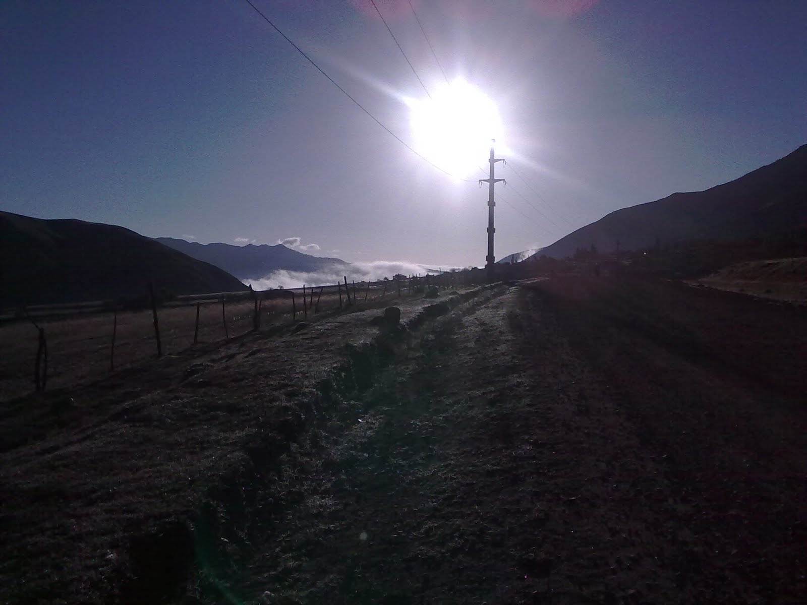
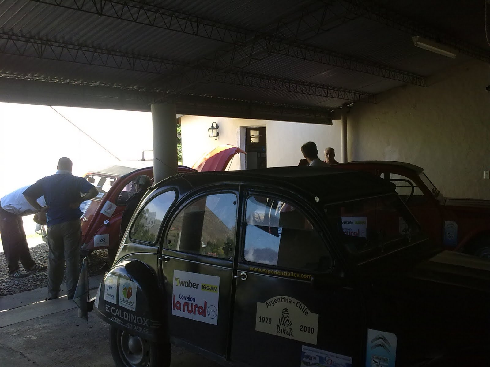

El despertar para quien escribe fue bien temprano, antes de la salida del sol. Jose debía regresar unas llaves en el Mollar y me pidió que lo acompañe. Me mostró un camino toco conocido, la Quebrada del Portugués, con una pradera verde llena de vacas que parecía las propagandas de chocolate suizo.
A la vuelta presenciamos un accidente de una mujer con la moto y sin casco. Nos detuvimos a socorrerla. Para que hablar del sistema de emergencia de la provincia. El único médico fui yo y la ambulancia que estaba equipada con muchas cosas, carecía de alguien que sepa para que se usan. En fin!!!
Nos juntamos todos después de desayunar y comenzamos la trepada de la cuesta del Infiernillo. El héroe del día fue el incansable Fernando!!!!! Mafalda parece que a los tres mil y pico de metros necesitó de unos mimos. Después de revisar bujías, platinos, bobina, llave de contacto etc., logró encender el motor de Mafalda. (el vídeo la subo cuando tenga mejor ancho de banda, igual que las fotos).
Desde ahí nos dirigimos a la Ruina de los Quilmes, entrando ya, con mucho ímpetu en la mítica Ruta 40!!!!! Gran parte de este tramo se encuentra en reparaciones y el camino es exigente. Las Citronaves se desenvolvieron con imponente soltura.
El camino y el paisaje fueron la nota del día. Las cuestas y los cardones, dieron paso a la cordillera que nos acompaño todo el recorrido a mano derecha. La llegada a Fiambalá fue entrada la noche.
La Dirección de Turismo local nos estaba esperando, y entendiendo el espíritu de los citronautas nos alojaron en el lugar que fue el comando del Rally Dakar 2010.
Hay poca señal por lo que debo las imágenes.
Como veras, Francho... sigo cada punto, coma y signo de admiracion que colocas en cada uno de tus relatos... increible que hayas tenido que socorrer a alguien, no se puede creer, por lo que leo te pasan demasiadas cosas... todas buenas por suerte!... espero que sigas con el mismo entusiasmo y quedate tanqui que aca el boliche esta diez puntos!! jajaja... abrazo!!